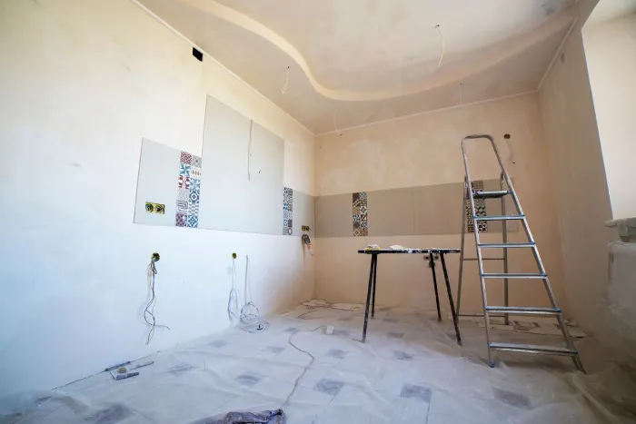

Last reviewed September 2026. General planning information; Reno Rise does not perform this work. Confirm requirements for your property with Toronto Building and qualified professionals.
Whether the basement is a rental suite, a home theatre or a gym, noise travels through the floor above, through shared walls and through gaps around pipes and ducts. Good sound control is a design decision: it is much easier to plan into the framing and ceiling assembly than to add later.
In a secondary suite, sound control often overlaps with the fire-separating ceiling assembly, which is one reason it is worth planning the two together with a designer.
Photos for Reference
Ideas for how a finished basement can look and feel. These are stock photos from Pexels, shown for inspiration only. They are not Reno Rise projects, and Reno Rise does not perform renovation work.



What the Work Typically Involves
- Reviewing where sound is likely to travel: ceiling, party walls, ducts and pipe penetrations.
- Insulation chosen for sound as well as thermal performance.
- Resilient channel or other isolation methods, and additional drywall layers where designed.
- Sealing gaps, outlets and penetrations that leak sound.
- Coordinating with any required fire-separation assemblies.
Permits and Approvals
Soundproofing on its own may not need a permit, but it is usually part of a larger project, and in a secondary suite the ceiling assembly is also a fire-separation element. Ask your designer how the two fit together.
Questions to Ask a Professional
- Is sound control designed together with the fire-separation assembly?
- How are ducts, pipes and lights sealed so they do not bypass the assembly?
- What level of sound reduction is the design aiming for, and how is it verified?
- What ceiling height is left after the assembly is built?
When This Is Not the Right Fit
Soundproofing cannot fix a structural or moisture problem. Sort those out first: interior waterproofing, and the legal secondary suite guide.
Frequently asked questions
Should soundproofing be done before drywall?
Generally yes. Assemblies are far easier to build into open framing than to retrofit behind finished walls.
Request a Basement Assessment
Share a few details about your basement and your plans. Reno Rise reviews what you send and matches your project with the contractor best suited to the work. This does not confirm an appointment, a quote or an approval.